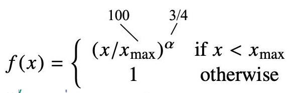

原文 https://nlp.stanford.edu/projects/glove/
作者認為ratio of co-occurrence probalility可以用來作為詞向量的轉換依據
假設有wordi,wordj兩個字
作者認為可以透過第三方wordk的字來確認wordi與wordj彼此間的關係
-
co-occurrence probalility定義:
Pij => word i 出現且 word j 也出現的機率
而作者在論文中的範例假設 : wordi=ice，wordj=steam
若word k選擇solid，Pik/Pjk 會非常大
若word k選擇gas，Pik/Pjk 會非常小
word k 選擇water or fashion，Pik/Pjk會接近1
因此作者假設了一個函數，代表wi與wj之間的關係可以透過wk這個第三方word來表示他們兩個之間的關係，其關係的數值為右邊的Pik/Pjk
上面的假設函數再經過一連串的推導公式後，如下圖:

前面兩個w是最終我們希望求得的詞向量
兩個b代表兩個詞向量的bias
w,b會在式子中不斷的被更新
- 符號說明:
X : 共現矩陣
Xij : 表示wordi在wordk周圍(window size)的出現次數
Xi : wordi在每個字詞出現的總次數
Pij: P(j|i) = Xij / Xi wordi出現的情況下wordj也出現的機率
f(Xij) 權重函數
- 作者表示，每個詞乘上的權重，根據一起出現的頻率應該要有所不同，例如Wordi跟wordj彼此共現的次數為0那麼f(0)=0才合理，因為他們之間根本沒有關係。
- 權重函數應該是一個非遞減函數(non-decreasing function)，因為彼此的共現頻率越大，那就代表兩個字之間的關係應該會越相關。
但有可能某個字的頻率過大，權重過大影響整個計算，因此做了權重的限制，如下圖，word的頻率高過/低過某個threshold後，權重值就會趨緩。
經過作者實驗後，他發現權重參數的設定為以下，可以得到不錯的效果

最後，我們只要求得左側的loss value值最小，就可以得到最佳化的詞向量
GloVe特徵
- unsupervised learning algorithm
- word-word co-occurences -> term to term relevance
- cosine similarity(餘弦定理，算夾角theta) 找尋word vector的相似度(degree of similarity)
1 | 算出來的數值越接近1表示兩個詞向量相似度越高，反之為0 |
- orientation 向量有方向性
- Word analogies 透過向量計算，可以獲得以下的神奇結果:
king — man+ woman= queen.
paris — france +germany = berlin. - 計算速度快
- 有使用到統計的特性
- 資料量小 適用
GloVe- 將corpus轉成gloVe詞向量
python_gloVe github https://github.com/maciejkula/glove-python
-
安裝glove_python
1
pip install glove_python
1
2
3#匯入以下Library
from glove import Corpus, Glove
from sklearn.feature_extraction.text import CountVectorizer -
code 實作公式 (在glove_python->glove->glove_cython.pyx)，公式對照程式
-
範例:
假設corpus
1 | # 句子來源:taylor swift - Lover 歌詞 |
首先須進行前處理，將句子做斷詞，這邊為了方便，單純用空格處理斷詞
1 | ## pre-processing |
斷詞結果如下:
['This', 'is', 'our', 'place,', 'we', 'make', 'the', 'rules']
['This', 'is', 'our', 'place,', 'we', 'make', 'the', 'call']
接著根據斷詞後的corpus建立global的Co-occurrence Matrix(共現矩陣)
依照window size範圍，紀錄term(word) to term(word)出現的頻率次數
1 | corpus = Corpus() # 初始化gloVe模型的語料庫 |
經過計算後所形成的矩陣如下:
矩陣行列對應字典順序
將資料帶入gloVe模型，設定參數，即可獲得每個word的詞向量
1 | ## gloVe model trainning |
Result:
視覺化gloVe詞向量(corpus與上面的例子不同)
- gloVe詞向量範例來源:gloVe的官網
1 | ##GloVe demo |
Code Result :
降維視覺化
use t-SHE class(in sklearn library) to visualize all of word vectors
GloVe 問題
- problem:
在上面的文提到，gloVe產生出的結果，會顯示出社會上會有的偏見、歧視用語，例如:
1 | man:programmer = female:homemaker |
The embedding model will see programmer closer with male than female because of our own social perception we have of this job which is reflected in the language we use.
Reference
ADL Lecture 5.6: GloVe 詞向量 (20/03/31)
A hands-on intuitive approach to Deep Learning Methods for Text Data — Word2Vec, GloVe and FastText
NLP and Deep Learning All-in-One Part II: Word2vec, GloVe, and fastText
Basics of Using Pre-trained GloVe Vectors in Python
GloVe算法原理及简单使用